Aurea
Inicio
Video
Quizzes
Análisis de Gráficos
Resumen Encuesta a Docentes
Gráfico 5: Manejo de Conflictos
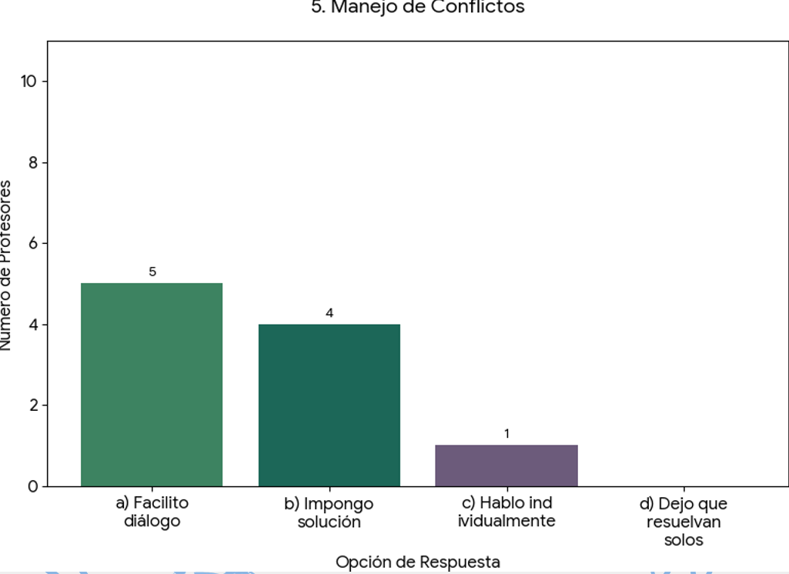
Gráfico 6: Impacto Emocional en el Aula
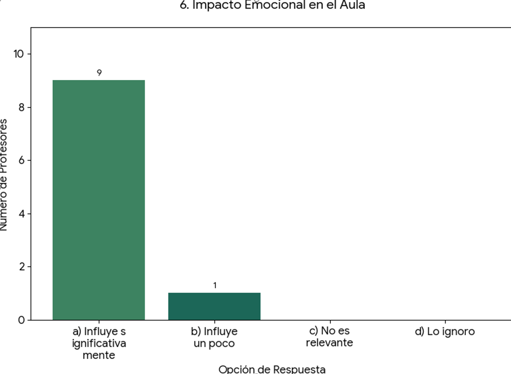
Gráfico 7: Desafíos Personales del Docente
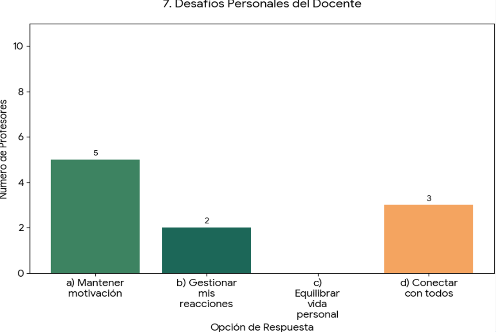
Gráfico 8: Importancia de la Formación en IE
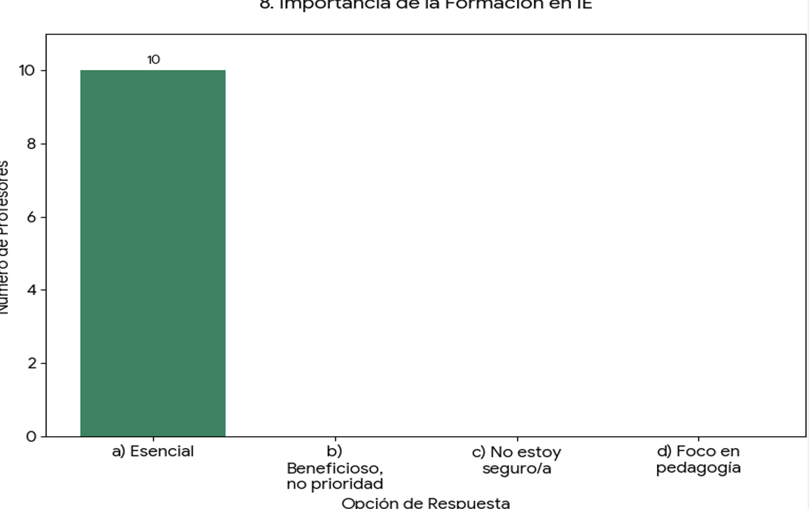
Encuesta a Estudiantes de la ETMT
Pregunta 1: Manejo del Estrés
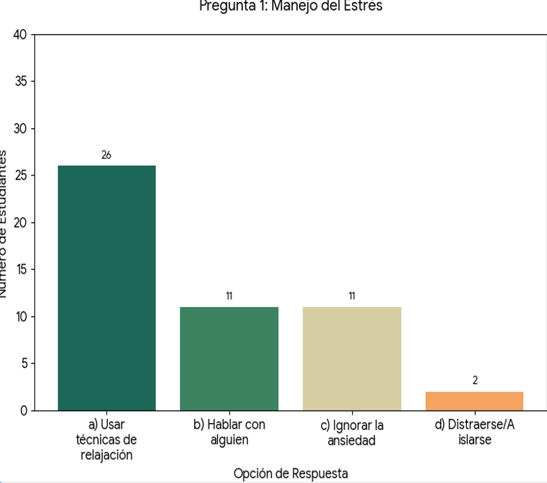
Pregunta 2: Resiliencia ante Frustraciones
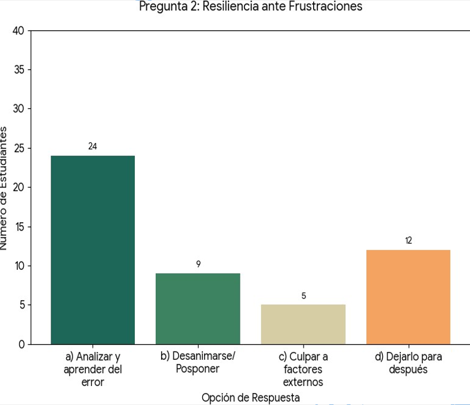
Pregunta 3: Empatía y Apoyo a Compañeros
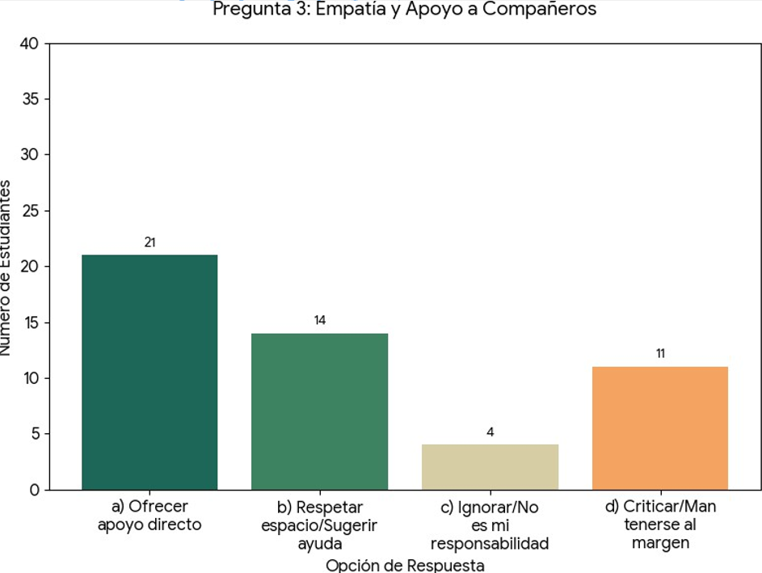
Pregunta 4: Autoconciencia Emocional
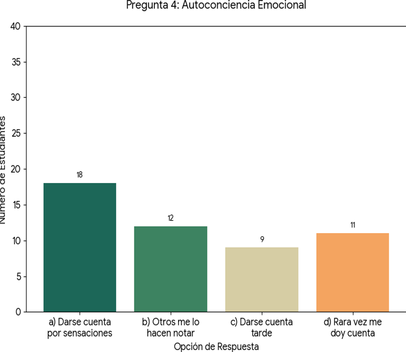
Continuación Encuesta a Estudiantes
Pregunta 5: Gestión de Desacuerdos
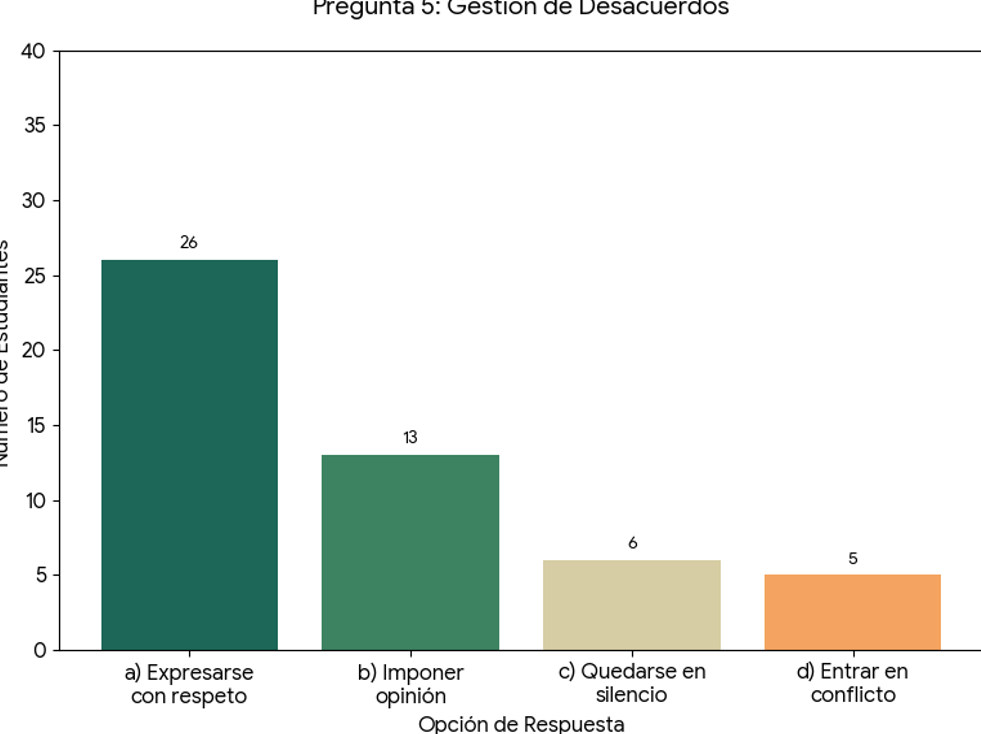
Pregunta 6: Reconocimiento de Emociones en Otros
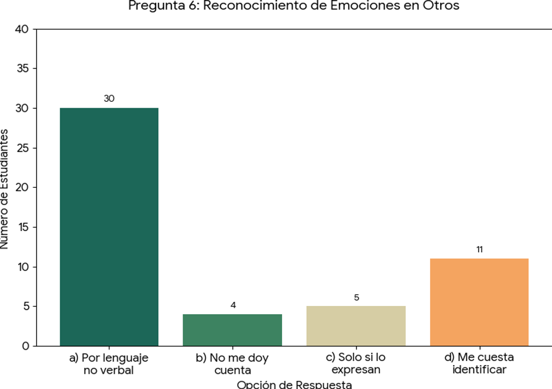
Pregunta 7: Impacto de las Emociones en el Rendimiento
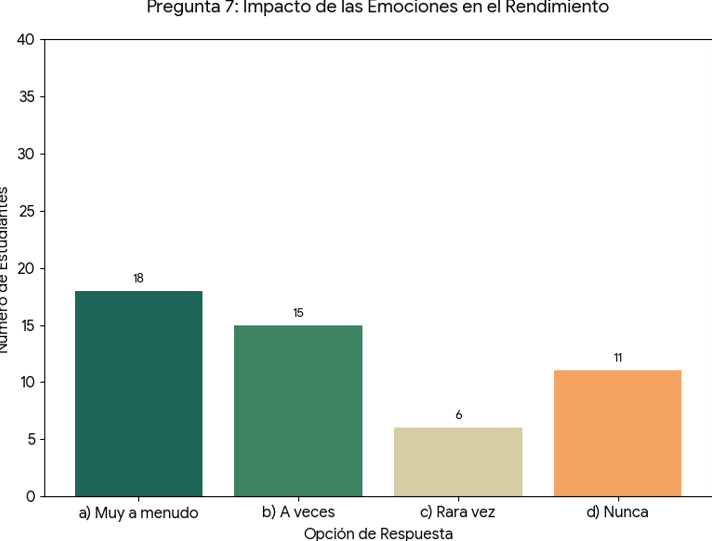
Pregunta 8: Respuesta a la Crítica
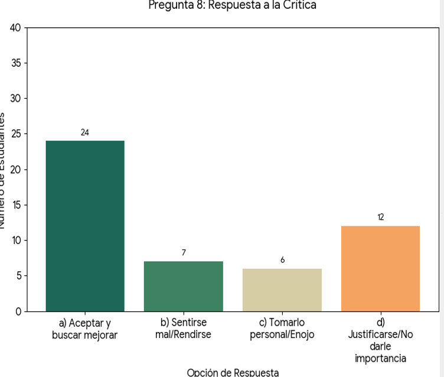
Pregunta 9: Toma de Decisiones sobre el Futuro
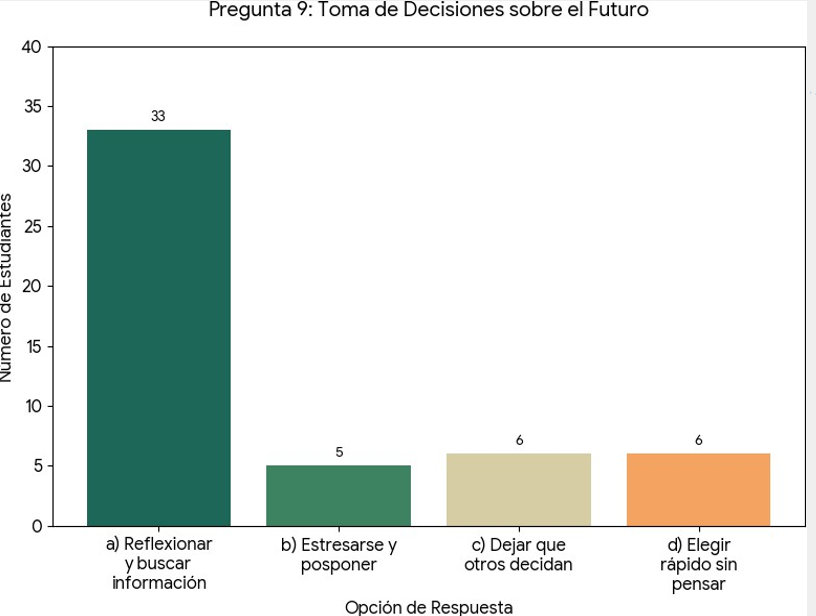
Fase IV: Evaluación / Encuesta a Docentes
Gráfico 1: Familiaridad con IE
Gráfico 2: Autorregulación en el Aula
Gráfico 3: Reconocimiento Emociones (Empatía)
Gráfico 4: Apoyo Emocional a Estudiantes